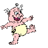

|
- "Mauvaise nouvelle, maman. J'ai vendu mon âme au Diable cet après-midi. - Oh ? Si récemment ?" Extrait de Calvin et Hobbes, géniale BD de Bill Watterson |
|
- "Mauvaise nouvelle, maman. J'ai vendu mon âme au Diable cet après-midi. - Oh ? Si récemment ?" Extrait de Calvin et Hobbes, géniale BD de Bill Watterson |
On s'aperçoit qu'un enfant grandit quand il cesse de demander
d'où il vient et commence à refuser de dire où il
va.
Quand s'arrondit le ventre d'une future maman, ce n'est pas simplement
un enfant qui se prépare à venir au monde, mais aussi un
objet de convoitise pour les stratèges du marketing.
Un enfant c’est inoubliable. Grâce à moi, moi tout
seul, ceux qui m’ont engendré n’oublieront jamais leur erreur.
La liberté d’opinion consiste souvent à se retrouver
exposé, au moment de la construction du cerveau, du développement
de la sensibilité, du langage et des opinions, à trois heures
de TF1 par jour, aux hurlements du foot, aux conditionnements publicitaires
et sectaires.
Tel père, tel fils.
A père avare, enfant prodigue.
Nos jeunes aiment le luxe, ont de mauvaises manières, se
moquent de l’autorité et n’ont aucun respect pour l’âge.
A notre époque, les enfants sont des tyrans.
J'ai toujours aimé les jeunes filles. Quand j'avais huit
ans, c'était encore plus grave : elles étaient encore plus
jeunes.

Je n'ai jamais voulu avoir d'enfants, de peur de faire un petit soldat,
un militaire, un tueur. On n'est jamais sûrs...
Vous me répliquerez que sans votre père vous ne seriez
pas, ni lui sans le sien et ainsi de suite jusques à Melchisédech.
Mais c'est lui qui est votre obligé, et non point le contraire :
vous payez de bien des années de larmes un sien moment de plaisant
chatouillement.
Comment se fait-il que les enfants étant si intelligents,
la plupart des hommes soient bêtes ? Cela doit tenir à l'éducation.
C'est stupéfiant de voir le nombre de gens qui prennent le
risque d'avoir des enfants. La pisciculture a ses spécialistes.
Mais le premier venu a des enfants qu'il élève.
Nous n'existons vraiment que par ces petits êtres,
Qui dans tout notre coeur s'établissent en maîtres,
Qui prennent notre vie et ne s'en doutent pas,
Et n'ont qu'à vivre heureux pour ne pas être ingrats.
Maintenant entre moi et les hommes il y a quelque chose changé
: je suis le père de l'un d'entre-eux.
Retour à la page de la Collection privée.